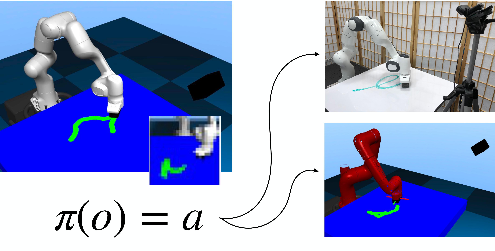
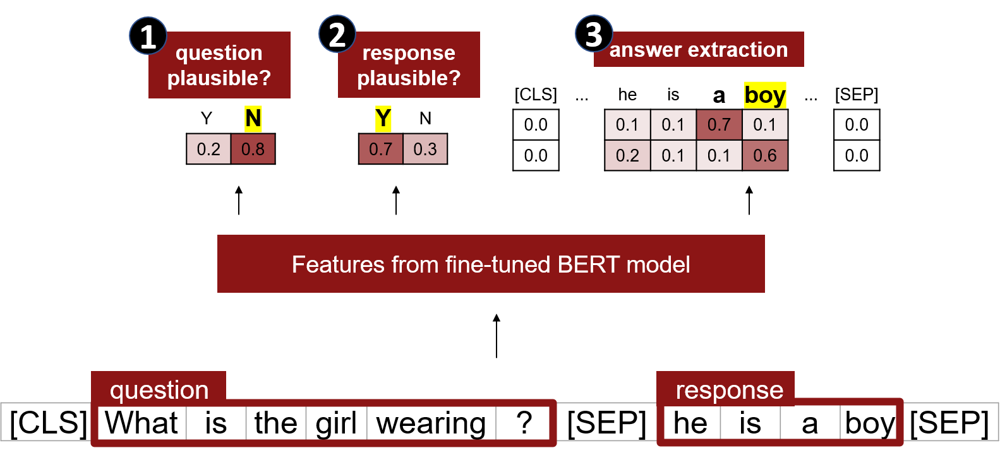
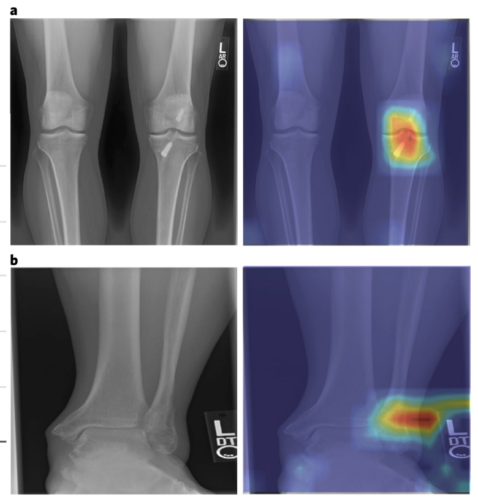

|
Rachel Gardner
I am a master's student at Stanford University, where I work on robotics and computer vision.
Google Scholar /
LinkedIn /
Github
|
|
|
Research
I'm interested in robotics, especially multimodal perception.
|
|

|
Variable Impedance Control in End-Effector Space: An Action Space for Reinforcement Learning in Contact-Rich Tasks
Roberto Martin-Martin,
Michelle Lee,
Rachel Gardner,
Silvio Savarese,
Jeannette Bohg,
Animesh Garg
IROS, 2019
project page /
arXiv /
code /
video
When doing reinforcement learning, using actions in end-effector space and allowing the agent to control its own impedance parameters results in better generalizability across robots and better sample efficiency.
|
|

|
Determining Question-Answer Plausibility in Crowdsourced Datasets Using Multi-Task Learning
Rachel Gardner,
Maya Varma, Clare Zhu,
Ranjay Krishna
EMNLP Workshop on Noisy User-Generated Text, 2020
arXiv /
code
Given (possibly bot-generated) questions and natural language user responses, we can estimate the plausibility of the question and answer pair in order to filter the data to create large-scale datasets and enable the creation of active learning agents.
|
|

|
Automated abnormality detection in lower extremity radiographs using deep learning
Maya Varma, Mandy Lu*, Rachel Gardner*,
Jared Dunnmon, Nishith Khandwala,
Pranav Rajpurkar, Jin Long,
Christopher Beaulieu, Katie Shpanskaya,
Fei-Fei Li,
Matthew P. Lungren*,
Bhavik N. Patel*
Nature Machine Intelligence, 2019
Nature /
code /
data
A single CNN model can be achieve high accuracy for abnormality classification in radiographs even across body parts.
|
Website format from Jon Barron.
|
{kind=link}